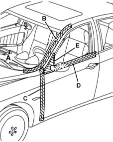

7005A Location of front door wind noises
- Path
- Test > 70 FITTINGS > 7005 PASSENGER COMPARTMENT FRONT SIDE DOORS > 7005A Location of front door wind noises
- Kind
- test / check procedure
- Applies to
- engines: 1.6 TS , 1.8 TS, 2.5 V6, 1.9 JTD 8v , 2.4 JTD 10v; all production periods
- Interactive page
- https://sloeber94.github.io/elrnDB-a156/en/#/3239185
Applies to: engines: 1.6 TS , 1.8 TS, 2.5 V6, 1.9 JTD 8v , 2.4 JTD 10v; all production periods
Tape the various areas illustrated in the diagram using masking tape.

Carry out a road test letting the vehicle gradually reach the speed at which the noise appears: if the noise persists, check for the presence of sealant between the wing and the pillar in the lower area.
Remove the masking tape from zone A and repeat the road test: if the noise persists, check the condition of the door housing seal in that area and that it adheres correctly to the bodyshell (see Op. 7005A34 front side door compartment seal r r ); also check the condition of the bonnet hinge buffer.
Remove the masking tape from zone B and repeat the road test: if the noise persists, check the condition of the door housing seal in that arae and that it adheres correctly to the bodyshell (see Op. 7005A34 front side door compartment seal r r ).
Also adjust the door hinges (see Op. 7005A14 front side door - adjust centering and moulding - includes adaptation of hinges and seals on door compartment ). Remove shims from the upper hinge or add shims to the lower one so that the door adheres better to the seal.
Remove the masking tape from zone C and repeat the road test: if the noise persists, adjust the door hinges (see Op. 7005A14 front side door - adjust centering and moulding - includes adaptation of hinges and seals on door compartment ). Remove or add shims from/to the two hinges, so that the door adheres better to the seal.
Remove the masking tape from zone D and repeat the road test: if the noise persists, check the condition of the glass scraper (see Op. 7005D26 front side descending window glass scraper (outer) r r ).
Remove the masking tape from the rear view mirror (zone E) and repeat the road test: if the noise persists, check the condition of the seal between the mirror and the door and the mirror itself (see Op. 7005R30 electrically controlled door mirror (one) - r+r ).
Topics linked from this page (4)
- 7005A14 front side door - adjust centering and moulding - includes adaptation of hinges and seals on door compartment
- 7005A34 front side door compartment seal r r
- 7005D26 front side descending window glass scraper (outer) r r
- 7005R30 electrically controlled door mirror (one) - r+r